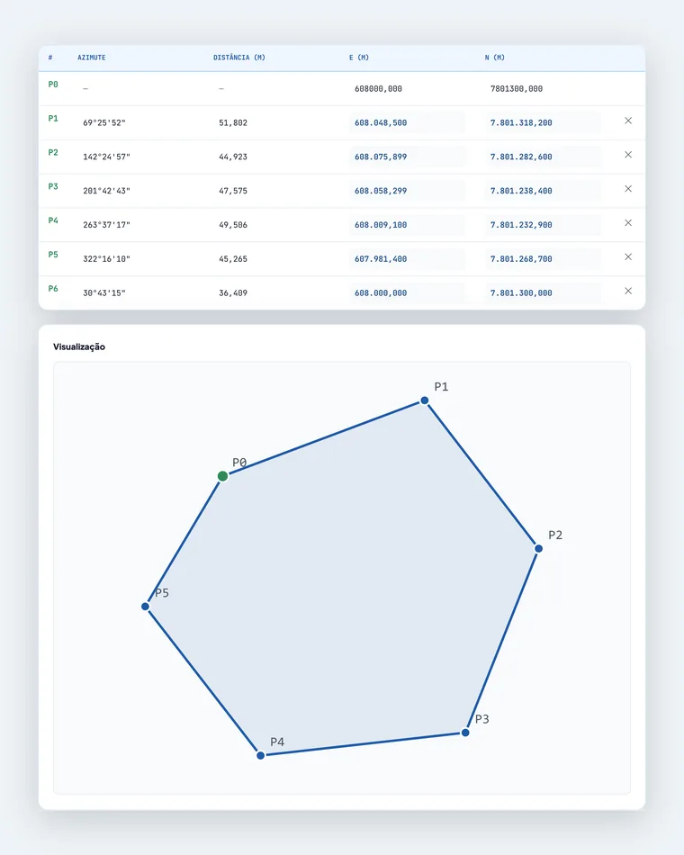
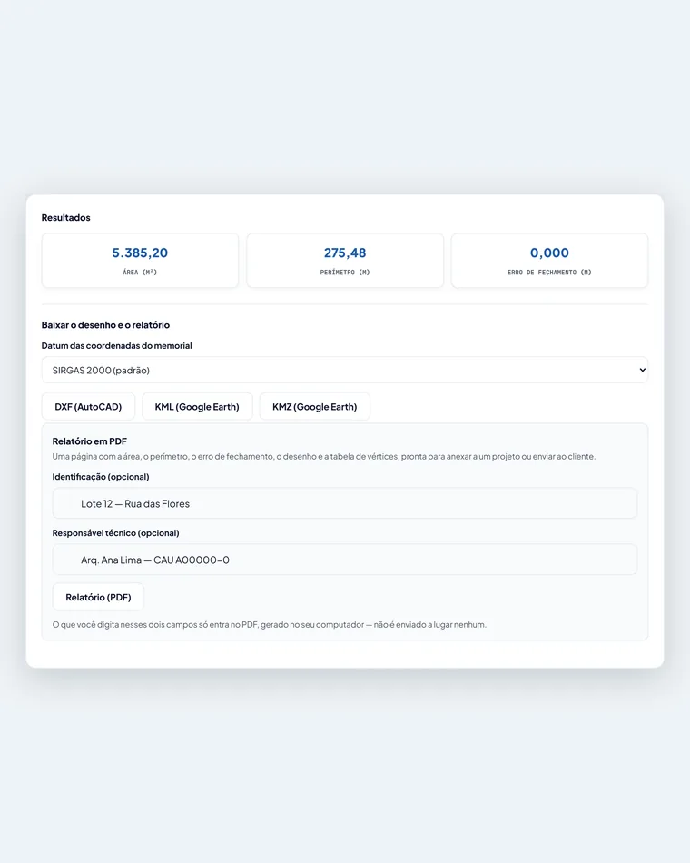

Desenhar poligonal a partir de coordenadas
Informe as coordenadas do terreno (UTM, azimute e distância, ou latitude e longitude) e o Zonea desenha a poligonal, calcula a área, o perímetro e o erro de fechamento, e deixa você baixar em DXF, KML/KMZ e PDF.
Sem instalar nada. Crie uma conta gratuita e use as 2 primeiras poligonais por nossa conta.
Como desenhar uma poligonal em 3 passos
- Preencha ou cole os dados. Digite o ponto inicial (E e N) e o azimute e a distância de cada segmento, ou cole direto de uma planilha do Excel. Se você tem o memorial descritivo completo, com as coordenadas de cada vértice, cole também.
- Veja o desenho e os resultados. A poligonal aparece na hora, e o Zonea calcula a área do terreno, o perímetro e o erro de fechamento, avisando se algo não fechou.
- Baixe no formato que precisar. DXF para o AutoCAD, KML ou KMZ para o Google Earth, e um relatório em PDF com os resultados, o desenho e a tabela de vértices.


Quais coordenadas a ferramenta aceita?
| O que você tem | Como usar no Zonea |
|---|---|
| Coordenadas UTM (E e N, em metros) | Digite ou cole direto na tabela. É o formato de trabalho da ferramenta (UTM zona 23S, SIRGAS 2000). |
| Azimute e distância de cada segmento | Digite a partir do ponto inicial. Aceita graus, minutos e segundos (189°1'24,32") ou graus decimais. |
| Memorial descritivo com vértice, azimute, distância e coordenadas | Cole do Excel com 6 colunas. O Zonea usa as coordenadas de cada vértice e reproduz a área declarada no memorial. |
| Coordenadas geográficas (latitude e longitude) | Use o conversor abaixo: ele transforma em UTM e gera o bloco pronto para colar na ferramenta. |
| Memorial em SAD-69 | Preencha normalmente e escolha SAD-69 ao baixar o KML/KMZ, para o desenho cair no lugar certo no Google Earth. |
Converter latitude e longitude para UTM
Cole uma coordenada por linha, latitude primeiro e longitude depois. Aceita graus decimais
(-19.9208 -43.9378) e graus, minutos e segundos (19°55'15,2"S 43°56'16,1"W), com ponto ou vírgula.
Cada linha vira um vértice, na ordem em que você colar.
| Vértice | Latitude | Longitude | E (m) | N (m) |
|---|
Na ferramenta, clique na primeira célula da coluna E (a linha do P0) e cole com Ctrl+V. Ela reconhece o bloco pelo modo "por coordenadas". Se o memorial estiver em SAD-69, escolha SAD-69 aqui em cima e, na hora de baixar o KML/KMZ, escolha SAD-69 também.
Quando isso ajuda
- Conferir um memorial descritivo antes de protocolar: a área e o fechamento batem com o que está no documento?
- Visualizar o terreno a partir de uma planta ou matrícula que só traz coordenadas e medidas em texto.
- Levar a poligonal para o projeto: exportar em DXF e abrir direto no AutoCAD, sem redesenhar.
- Ver o lote no Google Earth em KML ou KMZ, para checar onde ele cai no mapa.
- Calcular a área do terreno pelas coordenadas ou por azimute e distância, sem planilha manual.
- Estudar como uma poligonal se fecha: veja também o guia de como calcular área e perímetro e o de erro de fechamento.
Perguntas frequentes
Como desenhar uma poligonal a partir de coordenadas?
Informe as coordenadas UTM (E e N) do ponto inicial e o azimute e a distância de cada segmento — ou cole o memorial completo do Excel. O Zonea desenha o polígono, calcula a área, o perímetro e o erro de fechamento e deixa você baixar o resultado em DXF, KML, KMZ ou PDF.
Posso usar coordenadas geográficas (latitude e longitude)?
Sim. A ferramenta trabalha em UTM, mas esta página tem um conversor de latitude e longitude (em graus decimais ou em graus, minutos e segundos) para UTM que já monta o bloco pronto para colar na ferramenta.
Qual sistema de coordenadas o Zonea usa?
UTM zona 23S (meridiano central 45° W), no datum SIRGAS 2000, que cobre a Região Metropolitana de Belo Horizonte. Para memoriais em SAD-69, o KML e o KMZ podem ser convertidos para SIRGAS 2000 na hora de baixar.
Dá para abrir o resultado no AutoCAD e no Google Earth?
Dá. O DXF abre no AutoCAD, BricsCAD, LibreCAD e QGIS. O KML e o KMZ abrem no Google Earth. Há ainda um relatório em PDF com os resultados, o desenho e a tabela de vértices.
O Zonea substitui o levantamento topográfico ou a ART/RRT?
Não. É uma ferramenta de apoio para conferir e visualizar poligonais. O levantamento, o memorial oficial e a responsabilidade técnica continuam com o profissional habilitado (CREA/CAU).
Quanto custa?
As 2 primeiras poligonais de cada conta são grátis. Depois disso, a assinatura custa R$ 9,90 por 30 dias, em pagamento único (Pix, boleto ou cartão), sem renovação automática.
Pronto para desenhar a sua?
As 2 primeiras poligonais são grátis. Depois, R$ 9,90 por 30 dias, sem renovação automática.
Abrir a Ferramenta de PoligonalFerramenta de apoio: não substitui levantamento topográfico, ART/RRT nem a análise da prefeitura. Precisa de ajuda com um caso específico? Fale com a equipe pelo WhatsApp.